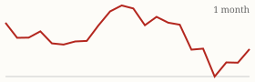

| Today's briefing for operators |
Top line: Mortgage purchase demand is down 60% from its peak |
|
| Thursday, October 22, 2026 | Late Edition | Curated from 63 voices on X |
|
Real Estate
Mortgage Market Sinks Into Its Deepest Slump on Record
Nick Gerli says the MBA purchase index fell to 129.2, down 60% from the pandemic peak and 18% from a year ago.
By @nickgerli1 |
Nick Gerli's chart of the MBA mortgage purchase index. Image via @nickgerli1 on X | Nick Gerli calls it the biggest recession in the history of the U.S. mortgage market, and says the reading shows how few Americans are going out and buying homes with a loan. It lands a day after he flagged pending home sales at an all-time low, so the demand picture keeps getting weaker. |
For a real estate CEO, fewer financed buyers means retail exits take longer and end buyers get pickier. That's a reason to lean on cash buyers and investor dispo, price deals with a margin for slower sales, and keep a close eye on how long your inventory is sitting. |
|
| Read on X |
|
Mortgage Rates & Markets | Mortgage Rates Today's average lender rates | 30-year fixed | 7.40% | +0.00 | | 15-year fixed | 7.04% | -0.01 |
Daily change vs. prior day. Source: Mortgage News Daily, as of 10/21/2026 (updated weekdays about 4 PM ET). |
|
S&P 500 Close of Wed, Oct 21 S&P 500 7,757.17 ▲ +44.60 (+0.58%) Yahoo Finance chart data (daily closes) |
|
Nasdaq Composite Close of Wed, Oct 21 Nasdaq Composite 26,702.86 ▲ +278.04 (+1.05%)  Yahoo Finance chart data (daily closes) |
|
| Real Estate & Deals | Where the $250K Deals Hide By @coleruudjohnson Cole Ruud-Johnson says the most profitable deals come from finding the most beat-up homes, and suggests pairing an AI assistant with Google Street View and satellite imagery to spot them before anyone else does. Read on X |
The AI Use Case Paying Off Now By @coleruudjohnson Watching 1,000+ investors in his client book, Cole Ruud-Johnson says list building is the number one AI use case with a real return across asset classes when you're chasing deals to buy. Read on X |
How to Handle a 31-Item Repair List By @Jacob_Naviaux Jacob Naviaux got a 31-item repair request from a buyer's agent on a flip and lays out his step-by-step process for answering Georgia's Amendment to Address Concerns form, starting by moving the full list into an email. Read on X |
Don't Use an SBA Loan to Learn Business By @coleruudjohnson Cole Ruud-Johnson warns against buying a business with an SBA loan if you've never run one. Start something smaller first and see how it goes before putting your family's livelihood on the line. Read on X |
| AI Briefing | Anthropic's Claude Duet announcement graphic. Image via @claudeai on X Anthropic Launches Claude Duet, a Proactive Agent By @claudeai Claude Duet is a research-preview app that comes to you with what needs attention, completes tasks, keeps working when you step away and checks with you before acting on your behalf. Alex Finn, who tested it early, calls the multitasking the best in the space. Read on X |
OpenAI Helps Find Critical Flaws in PHP By @OpenAI OpenAI says its models helped uncover critical security flaws in PHP, which runs an estimated 70% of websites, and it packaged a Codex skill to check whether your site is affected. Read on X |
OpenAI Models Come to Google Cloud By @OpenAI OpenAI's frontier models and Codex agent workflows are coming to Google Cloud's Model Garden, so companies can use them where they already build. Read on X |
Rotate Your AI Keys Today By @gregisenberg With a wave of AI-powered attacks hitting companies, Greg Isenberg says attackers went after AI keys stored on Railway, because an API key is basically a credit card for compute. His 10-minute fix is to rotate every key. Read on X |
Point AI at Bigger Problems By @PeterDiamandis Peter Diamandis says using AI to do 9th-grade homework is a travesty, but asking it to help design an interplanetary spaceship is education. The same goes for teams: aim the tools at harder goals, not just busywork. Read on X |
Look Wider When Hiring By @Sabrina_Ramonov Sabrina Ramonov points new grads to a free tool showing one degree can map to 800+ careers. For hiring managers, it's a reminder that strong candidates often come from majors you wouldn't screen for. Read on X |
| Business & Leadership | Decide, Be Wrong, Fix It Fast By @LeilaHormozi Leila Hormozi says the best solutions come from making the call, being wrong and fixing it before everyone else finishes planning. Speed of decision beats perfect planning. Read on X |
Watch Who Wants You to Fail By @AlexHormozi Alex Hormozi says some people want you to fail so they can justify the risks they chose not to take, and you should remove them from your life ruthlessly. Read on X |
Most Problems Are Self-Inflicted By @danmartell Dan Martell says the older he gets, the more he realizes most of his problems were self-induced. A useful prompt for a CEO reviewing what's actually slowing the business down. Read on X |
|
The Hyre Times is compiled each morning by Groky from public posts on X plus public rate and market data. Summaries reflect the authors' own claims and have not been independently verified. Not financial advice. © 2026 Hyre Times. |
|